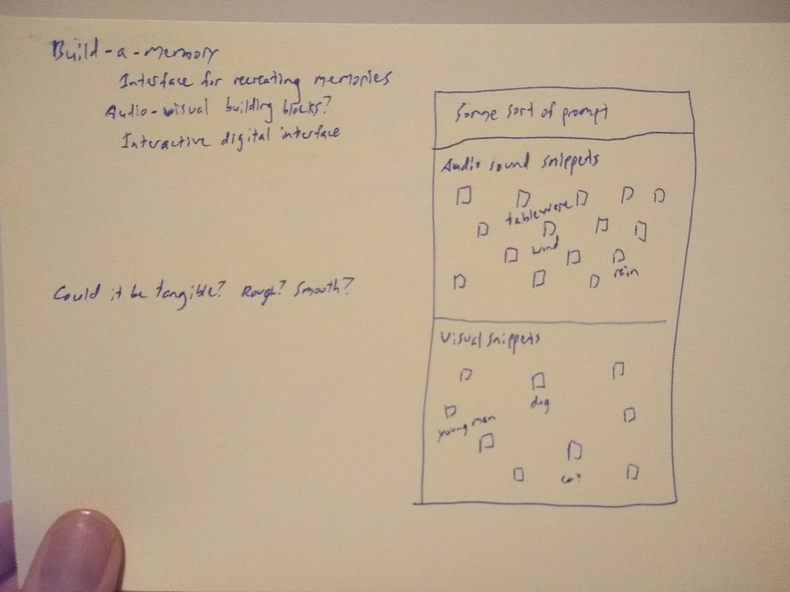
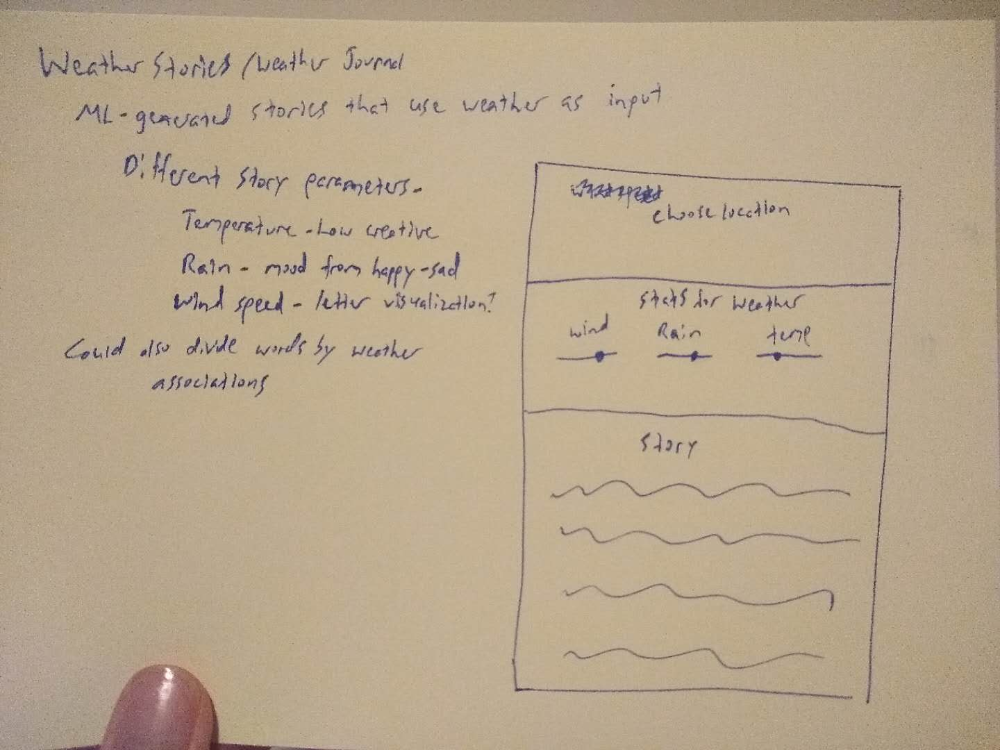
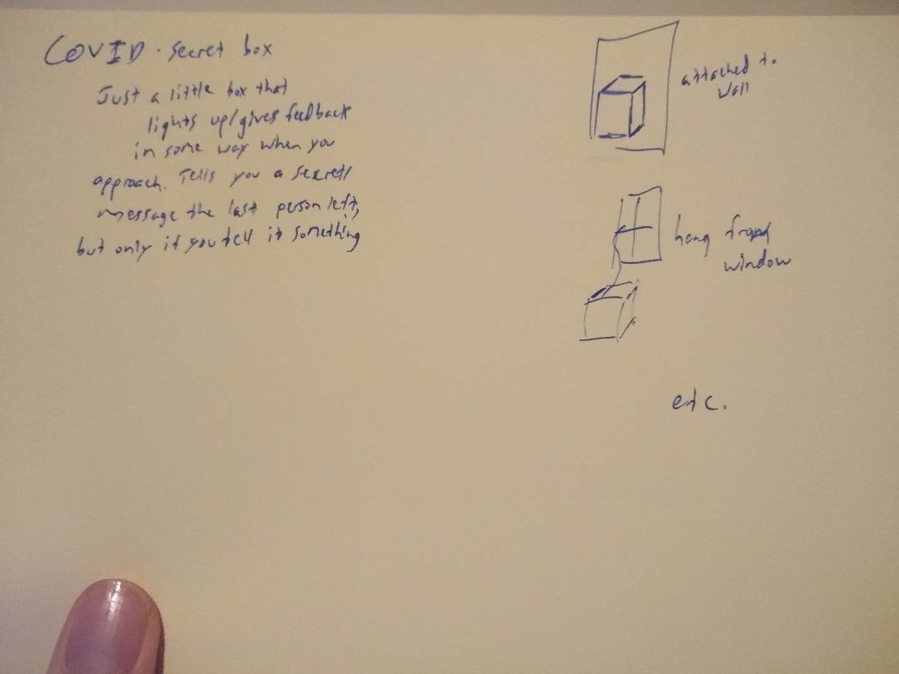

I'm having a tough time ideating with this one... Here are a few hopefully more refined final ideas.
1: Build-a-memory: I want to give people a platform to explore some of their memories. I want to see what they would look like given a certain form or audio quality. So, some sort of interface to do that.
2: Weather Stories: I think weather should be able to tell its own story. Can we translate that data into something more human? If I use something like GPT2 to generate random stories against certain parameters, we can use weather as the input data and make stories accordingly.
3: COVID box of secrets: A sweeter, simpler idea that could be done any time, honestly. When you can't be as present with people, you can whisper your thoughts and secrets to a box on the street. The next person can hear it and leave something for others. Audio-based. Would detect via proximity, I think.
Comments? Questions? Concerns? Email me here!